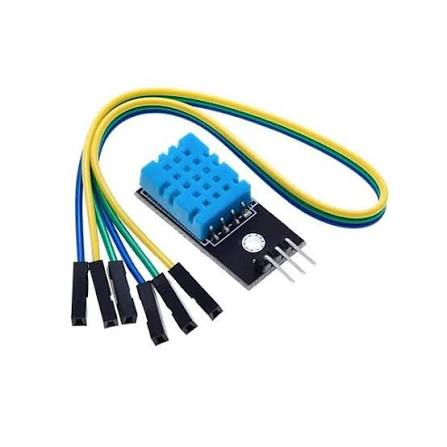
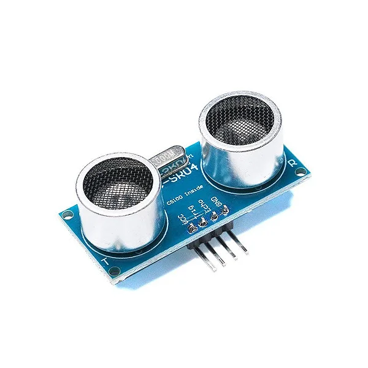
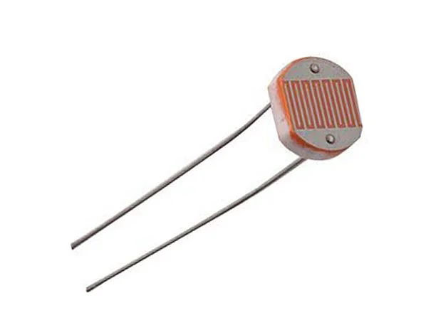
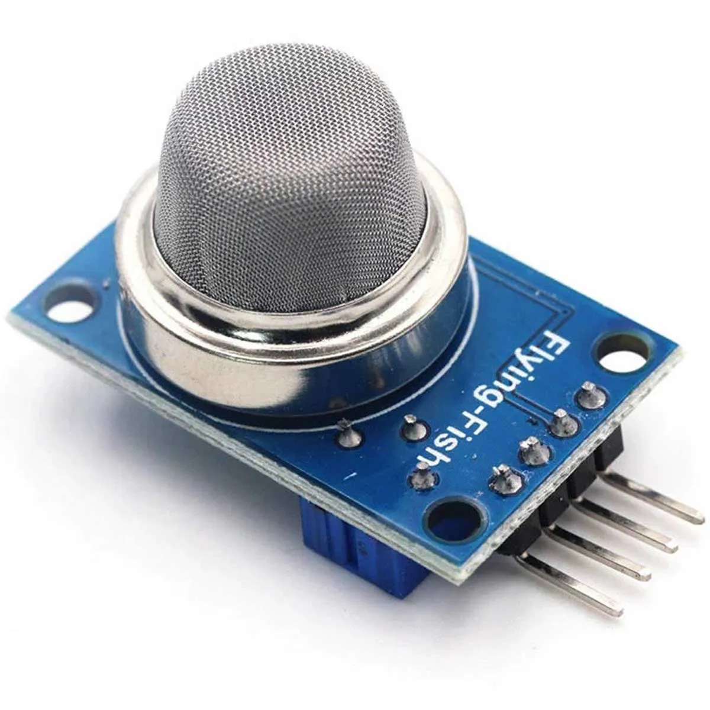
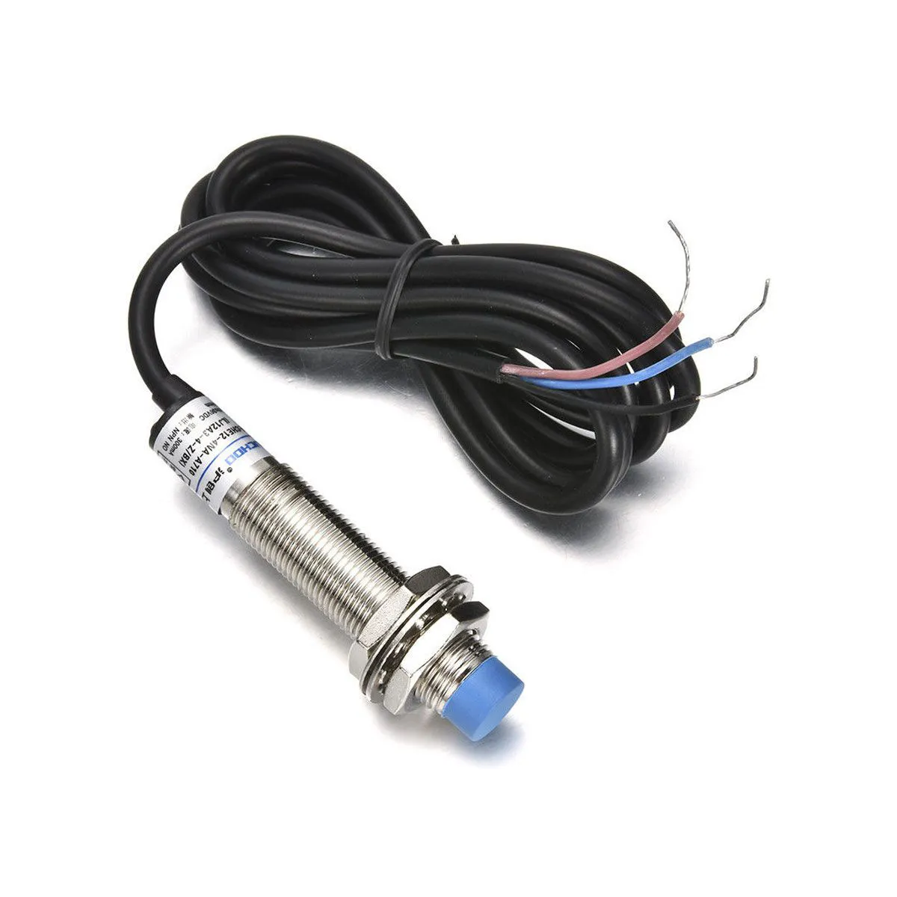
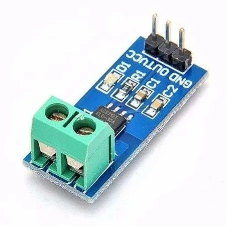
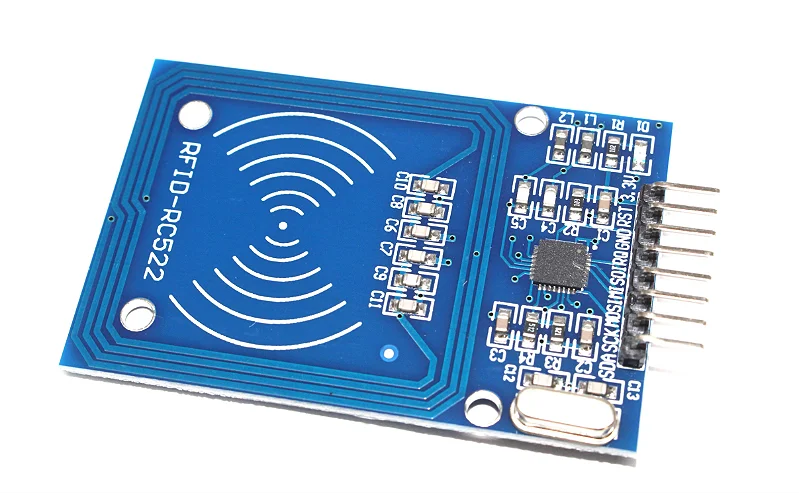
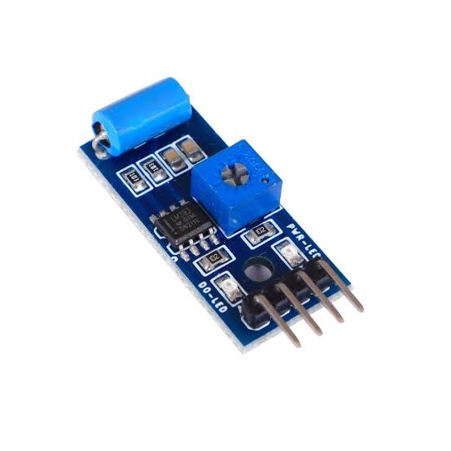

1. DHT11 (Temperatura e Umidade)
Aplicação: Climatização e salas de servidores.
// Leitura Digital no Pino 2
int leitura = digitalRead(2);
Serial.println(leitura);
2. HC-SR04 (Ultrassônico / Distância)
Aplicação: Medição de nível e robôs móveis.
// Disparo de pulso ultrassônico
digitalWrite(9, HIGH); delayMicroseconds(10); digitalWrite(9, LOW);
long tempo = pulseIn(10, HIGH);
3. LDR (Luminosidade)
Aplicação: Iluminação automática e fotocélulas.
// Leitura Analógica
int luz = analogRead(A0);
Serial.println(luz);
4. PIR HC-SR501 (Presença)
Aplicação: Alarmes e detecção de movimento.
// Detecção de presença (HIGH/LOW)
if (digitalRead(7) == HIGH) {
Serial.println("Movimento detectado!");
}
5. MQ-2 (Gás e Fumaça)
Aplicação: Prevenção de vazamentos em galpões.
// Leitura do nível de gás
int gas = analogRead(A1);
if (gas > 400) Serial.println("Alerta de Gás!");
6. LJ12A3 (Indutivo / Metal)
Aplicação: Contagem de peças metálicas em esteiras.
// Contagem de metal
if (digitalRead(3) == LOW) {
Serial.println("Peça metálica passou!");
}
7. ACS712 (Corrente Elétrica)
Aplicação: Monitoramento e proteção de motores.
// Leitura de corrente do motor
int corrente = analogRead(A2);
Serial.println(corrente);
8. MFRC522 (Leitor RFID)
Aplicação: Controle de acesso e crachás.
// Leitura de Tag RFID (com biblioteca)
if (mfrc522.PICC_IsNewCardPresent()) {
Serial.println("Cartão Lido!");
}
9. SW-420 (Vibração)
Aplicação: Manutenção preditiva de máquinas.
// Alerta de vibração excessiva
if (digitalRead(4) == HIGH) {
Serial.println("Vibração Anormal!");
}
10. Sensor de Chama IR
Aplicação: Proteção contra incêndio e fogo.
// Detecção de fogo
if (digitalRead(8) == LOW) {
Serial.println("Fogo detectado!");
}